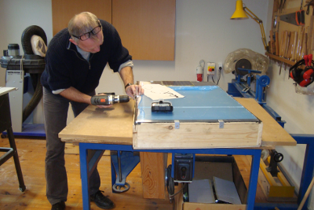
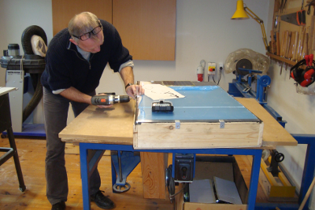

We are the place where you, as an inventor, entrepreneur, hobbyist or student can come and work on projects that are fun, green and innovative.
At the Green Makerspace you can materialize your ideas and learn in an inspiring environment with many different professionals and creatives.
 
